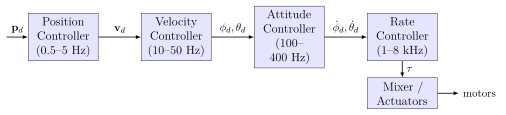
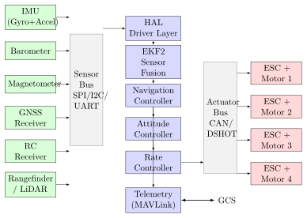

Chapter 7: Avionics and Flight Control¶
7.1 Avionics Architecture¶
Avionics encompasses all electronic systems that enable a drone or guided vehicle to sense its environment, process information, make control decisions, and actuate control surfaces or motors. Modern unmanned aerial vehicles carry avionics suites that rival crewed aircraft in complexity while being constrained to fractions of the size, weight, power, and cost (SWaP-C). This chapter treats the fundamental architecture, hardware, algorithms, and certification frameworks that underpin drone and missile avionics.
7.1.1 Federated versus Integrated Modular Avionics¶
Federated architecture distributes functions across dedicated, independent Line-Replaceable Units (LRUs). Each LRU contains its own processor, power supply, and I/O. A typical federated installation on a medium-altitude long-endurance (MALE) UAV includes a Flight Management Computer (FMC), a separate Flight Control Computer (FCC), a dedicated navigation computer, and a mission computer as entirely separate boxes, each with certified software. The advantages are physical isolation of faults, ease of independent qualification, and straightforward upgrade of a single function without recertifying the full suite.
The disadvantage of federation is weight, volume, and power overhead. Duplicating processors, power converters, and connectors across ten or more LRUs consumes resources and introduces numerous cable harness connections that become the dominant failure mode in tactical environments.
Integrated Modular Avionics (IMA), originally developed for the Boeing 777 and Airbus A380, aggregates processing onto a common computing platform — typically a COTS (Commercial Off-The-Shelf) backplane hosting application modules. ARINC 651 and ARINC 653 define the platform and partitioned operating environment respectively. Under ARINC 653, each avionics application runs in a partition that is allocated deterministic CPU time slots, memory, and I/O by a partitioned RTOS (e.g., LynxOS-178, VxWorks 653, SYSGO PikeOS). Partitions are temporally and spatially isolated: a fault in one partition cannot overwrite another partition’s memory or cause it to miss its time window, a property called robust partitioning.
For unmanned systems, IMA reduces the number of physical boxes and enables consolidation of the flight controller, navigation, payload management, and health monitoring onto a single rugged computing module. The FACE (Future Airborne Capability Environment) Technical Standard, published by The Open Group, extends IMA principles to military UAVs by defining a portable component architecture (Transport, I/O, Platform-Specific, and Portable segments) that decouples application software from underlying hardware. FACE conformance is now mandated on many US DoD UAV programmes including the MQ-25 Stingray and NGAD platforms.
7.1.2 Avionics Data Buses¶
| Bus | Speed | Topology | Use Case | Max Nodes |
|---|---|---|---|---|
| UART (async) | 115.2 kbps – 10 Mbps | Point-to-point | GPS, telemetry radios | 2 |
| SPI | 1 – 80 MHz | Master/slave | IMU, flash memory | 16 (CS lines) |
| I2C | 100 kHz – 3.4 MHz | Multi-master bus | Baro, compass, power ICs | 128 |
| CAN 2.0B | 1 Mbps | Differential bus | ESC, actuators, redundant | 110 |
| CAN FD | 8 Mbps | Differential bus | High-speed CAN nodes | 110 |
| UAVCAN v0 / DroneCAN | 1 Mbps (CAN) | Distributed | Sensors, ESCs, GNSS | 127 |
| DroneCAN v1 (UAVCAN v1) | 8 Mbps (CAN FD) | Distributed | All avionics | 127 |
| MAVLink (over UART/UDP) | Serial/IP | Logical | GCS comms, companion | N/A |
| 100BASE-T1 Ethernet | 100 Mbps | Star/daisy chain | Video, data-heavy sensors | 1024 |
CAN bus (Controller Area Network, ISO 11898) uses differential signalling on a two-wire bus (CANH/CANL), making it highly immune to electromagnetic interference. The arbitration mechanism is non-destructive CSMA/CD based on message priority: lower numeric CAN ID wins arbitration. This determinism makes CAN the preferred choice for safety-critical actuator control in industrial and aerospace applications.
DroneCAN (formerly UAVCAN v0, now being superseded by UAVCAN v1/Cyphal) builds a publish-subscribe middleware on top of CAN or CAN FD. Nodes advertise data types (e.g., uavcan.equipment.esc.RPMCommand, uavcan.equipment.gnss.Fix) using a compact Specification Transfer Protocol (STR). Every node can be identified by a node-ID, queried for firmware version, and updated over the bus. This self-describing topology simplifies integration significantly compared to raw CAN.
MAVLink is a lightweight binary serialisation protocol originally created by Lorenz Meier at ETH Zürich in 2009. MAVLink v2 messages have a 10-byte fixed header, a variable-length payload up to 253 bytes, and a 2-byte CRC. A 13-bit message ID space supports over 8000 message types. Heartbeat packets at 1 Hz allow GCS health monitoring. MAVLink is not a real-time bus — it runs over UART, UDP, or TCP and is intended for commanding and monitoring, not for inner-loop actuator control.
SpaceWire (ECSS-E-ST-50-12C) is used on spacecraft and high-reliability missile avionics. It provides 2–400 Mbps per link, uses LVDS differential signalling, and supports a wormhole-routing network topology. MIL-STD-1553B (1 Mbps, command-response, dual-redundant) remains the legacy standard on many military aircraft and missiles due to its extensive qualification heritage.
7.1.3 Hardware Abstraction Layer and RTOS Scheduling¶
A Hardware Abstraction Layer (HAL) insulates application code from peripheral-specific register maps, interrupt vectors, and clock trees. The HAL exposes a uniform API — for example, hal_spi_transfer(), hal_uart_write() — so that the same flight-control algorithm source code compiles for STM32H7, NXP i.MX RT, or Xilinx Zynq targets with only board-support-package (BSP) changes. PX4 implements its HAL through the PX4 Hardware Layer (UXRCE-DDS driver model on NuttX), while ArduPilot uses its own AP_HAL abstraction supporting NuttX, Linux, ChibiOS, and SITL (Software-In-The-Loop) simulation.
FreeRTOS is the dominant RTOS in lower-cost flight controllers. It provides:
-
Priority-based preemptive scheduling with time-slicing for equal-priority tasks.
-
Static and dynamic memory allocation; configurable heap management schemes (heap_1 through heap_5).
-
Binary semaphores, counting semaphores, mutexes with priority inheritance, event groups, stream buffers, and message queues as synchronisation primitives.
-
vTaskDelayUntil()for periodic task execution with drift-free timing.
A typical ArduPilot task schedule on a ChibiOS-based Pixhawk assigns priorities as follows: the IMU sampling interrupt fires at the gyro’s output data rate (typically 8 kHz for ICM-42688-P), places data in a ring buffer, and raises a semaphore for the fast attitude estimation task running at 1 kHz. The EKF runs at 400 Hz; the waypoint and position controller at 50 Hz; the telemetry serialisation task at 10 Hz. This hierarchical scheduling ensures the innermost attitude loop has deterministic latency below 250 µ s.
NuttX (used by PX4) is a POSIX-conforming RTOS supporting threads, file systems, networking, and device drivers in a Unix-like programming model. NuttX passes the DO-178C tool qualification criteria at DAL C when using the formally validated configuration tools, making it suitable for civil UAV certification programmes.
7.1.4 Redundancy Architectures and Voting Logic¶
Safety-critical avionics design quantifies reliability through failure probability rates. For the most critical functions (e.g., flight control on a crewed aircraft), the system must achieve a probability of catastrophic failure below \(10^{-9}\) per flight hour. This is achieved through redundancy.
Simplex: single hardware path, no redundancy. Reliability equals component MTBF alone. Used where cost/weight precludes redundancy and operational consequences are tolerable (e.g., a small recreational quadcopter).
Dual redundancy: two parallel channels. If one fails and outputs disagree, the system can detect the fault but cannot determine which channel is erroneous without additional information. Often used with a crossover monitor that compares outputs and activates a failsafe if they diverge beyond a threshold \(\delta\).
Triple Modular Redundancy (TMR): three independent channels. A majority-voting element selects the output of any two channels that agree. If channel \(i\) outputs \(y_i\), the voted output is:
TMR tolerates any single failure without loss of function, though the voter itself becomes a single point of failure. Quadruplex systems (four channels, pair-and-compare) are used on fly-by-wire combat aircraft. The Pixhawk FMUv5X implements triple-redundant IMUs (ICM-20649, ICM-42688-P, ICM-20602) to allow soft TMR voting in firmware.
The probability of a TMR system failing given independent component failure probability \(p\) is:
For a component with \(p = 10^{-3}\), TMR reduces failure probability to \(3 \times 10^{-6}\).
7.1.5 DO-178C Software Certification and DO-254 Hardware Assurance¶
DO-178C (Software Considerations in Airborne Systems and Equipment Certification, RTCA, 2011) defines five Design Assurance Levels (DALs):
| DAL | Failure Condition | Prob. per FH |
|---|---|---|
| A | Catastrophic | \(< 10^{-9}\) |
| B | Hazardous / Severe Major | \(< 10^{-7}\) |
| C | Major | \(< 10^{-5}\) |
| D | Minor | \(< 10^{-3}\) |
| E | No Safety Effect | No requirement |
DO-178C prescribes a set of objectives (66 for DAL A) that must be satisfied, each traceable to a planning document, a standards document, requirements, design, code, and verification artefact. Key requirements at DAL A include: Modified Condition/Decision Coverage (MC/DC) testing, where every independent condition in a decision must be shown to independently affect the outcome; formal traceability from high-level requirements through low-level requirements to source code to object code; and independent verification of every design and test artefact by a separate team.
DO-254 applies equivalent assurance to complex electronic hardware (FPGAs, ASICs, PLDs). It mandates capture of hardware design lifecycle data, requirements, validation, and verification. FPGAs used in military missile avionics (e.g., in a seeker digital processing board) typically must achieve DAL B or A, requiring extensive design checking, timing simulation, ATPG test generation, and failure mode analysis.
The DO-178C supplement DO-330 covers tool qualification — if a software tool (e.g., a compiler, static analyser) is relied upon to satisfy a DO-178C objective, the tool itself must be qualified to a Tool Qualification Level (TQL-1 through TQL-5).
7.2 Flight Controllers¶
7.2.1 ArduPilot Architecture¶
ArduPilot is an open-source autopilot system maintaining over 800,000 lines of C++ code across multiple vehicles: ArduCopter (multirotor), ArduPlane (fixed-wing), ArduRover (ground vehicles), and ArduSub (underwater). Its architecture is layered:
-
Libraries layer: AP_HAL (hardware abstraction), AP_InertialSensor (IMU drivers and pre-processing), AP_GPS, AP_Baro, AP_Compass, AP_AHRS (attitude heading reference system), AP_NavEKF2/3 (extended Kalman filter).
-
Vehicle layer: ArduCopter defines the mode state machine, motor mixing, and top-level control loop.
-
Scheduler: AP_Scheduler runs tasks at specified Hz rates using cooperative scheduling; tasks must complete within their time slice or a watchdog fires.
-
Actuator outputs: AP_Motors computes per-motor commands from roll, pitch, yaw, and throttle demands; SRV_Channels maps these to PWM/DSHOT outputs.
The Extended Kalman Filter (AP_NavEKF3) is the sensor fusion core. It maintains a 24-element state vector including position (3), velocity (3), quaternion attitude (4), delta-angle bias (3), delta-velocity bias (3), magnetic field body-frame (3), and magnetic field earth-frame (3). More detail on the EKF equations is given in Section 7.3.
7.2.2 PX4 Autopilot Architecture¶
PX4 uses a modular, publish-subscribe middleware called uORB (Micro Object Request Broker), inspired by ROS topics but implemented without dynamic memory allocation in a hard real-time context. Each functional module (e.g., ekf2, mc_pos_control, mixer) runs as an independent process on NuttX. Modules communicate exclusively through uORB topics, enabling clean separation and testability. For example, the sensors module fuses raw IMU data and publishes sensor_combined; the ekf2 module subscribes to sensor_combined and publishes vehicle_local_position and vehicle_attitude.
The px4_simple_app pattern allows rapid development of new modules: a module’s main() function calls orb_subscribe(), enters a polling loop, processes data, and calls orb_publish(). The overhead is microseconds.
PX4’s mixer subsystem translates scalar roll/pitch/yaw/thrust commands into per-actuator duty cycles. Custom mixers are defined in plain-text .mix files supporting multi-rotor geometries, fixed-wing control surface mixing, and VTOL transition schedules.
7.2.3 Pixhawk Hardware Platform¶
The Pixhawk 6X (FMUv6X) exemplifies the current generation of open hardware flight controllers:
-
Main processor: STM32H753 (ARM Cortex-M7) at 480 MHz, 2 MB flash, 1 MB SRAM, double-precision FPU, hardware AES/hash accelerator.
-
I/O processor: STM32F100 running the safety IO coprocessor — independently reads RC input and drives PWM outputs even if the main processor crashes, providing a hardware-level failsafe.
-
IMU triple redundancy: ICM-42688-P (primary), ICM-20649 (secondary), IIM-42652 (tertiary). Each IMU is independently wired to separate SPI buses to prevent a bus fault from affecting multiple sensors.
-
Barometers: ICP-20100 and BMP388, mounted with foam isolation from PCB vibration.
-
Magnetometer: IST8310 (internal) plus provisions for external Drotek or Here3+ GPS/compass.
-
Power: Dual redundant power inputs with OR-ing FETs; power module connector with 5 V / 3.3 V rails; brick connector for 2–14S LiPo.
-
Connectivity: UART\(\times\)8, I2C\(\times\)4, SPI\(\times\)6, CAN\(\times\)2, USB-C OTG, RCIN, DSM, SBUS, RSSI, PPM, 16\(\times\) PWM/DSHOT.
The PCB stack-up separates the analog power plane, digital power plane, and signal layers to minimise electromagnetic coupling. IMU footprints are placed at the geometric centroid of the board to minimise flexural vibration artefacts.
7.2.4 Betaflight and iNav for FPV Systems¶
Betaflight targets high-performance FPV racing and freestyle quadcopters. Its inner gyro loop runs at up to 8 kHz — meaning attitude rate corrections are applied every 125 µ s — while the outer PID loop runs at a configurable 1–8 kHz. Key features distinguishing Betaflight from autopilot-grade software:
-
RPM filter: reads ESC telemetry at 1 kHz to obtain exact motor RPM, computes the expected rotor harmonic frequencies (\(f_n = n \cdot \text{RPM}/60\)), and places dynamic notch filters at these frequencies. This removes frame resonance noise without requiring soft-mounting of the FC.
-
Dynamic D-term filter: adjusts the cutoff frequency of the D-term low-pass filter in real time based on the ratio of D-term to noise, reducing motor heat.
-
Feedforward: derivative of the RC input signal added to the output to improve step response without waiting for error to build, effectively a command-derivative term.
-
Anti-gravity: temporarily boosts I-term when throttle changes rapidly, preventing attitude sag during rapid throttle-up manoeuvres.
iNav adds autonomous navigation to the same Betaflight hardware base, implementing GPS-based position hold, waypoint missions, and return-to-home on fixed-wing and multirotor platforms at modest cost.
7.2.5 Military-Grade Flight Controllers¶
Military flight controllers must meet MIL-SPEC environmental standards (MIL-STD-810 for shock, vibration, temperature, humidity; MIL-STD-461 for EMI/EMC), operate from \(-54\)° C to \(+71\)° C, and in some cases survive nuclear radiation environments.
OpenVPX (VITA 65) is the dominant backplane standard for military computing. A 3U VPX module (100 mm \(\times\) 160 mm) hosts a processing node connected via high-speed serial fabrics (PCIe, 10GbE, RapidIO, Aurora) on the backplane. VITA 48.2 defines liquid-flow-through (LFT) cooling for conduction-cooled modules at up to 100 W/module. Mission computers on the MQ-9 Reaper use VPX modules from Curtiss-Wright and Mercury Systems.
Radiation tolerance is achieved through use of radiation-hardened (RadHard) ASICs, or by radiation-tolerant COTS parts selected after heavy-ion and proton testing per JEDEC JESD57 and MIL-STD-883 TM1019. For cruise missiles operating at low altitude, the main radiation concern is EMP (see Chapter 11); for ballistic missiles, cosmic ray single event upsets (SEUs) in SRAM and flip-flops are addressed by error-correcting code (ECC) memory and triple-redundant register voting.
7.3 IMU and Sensor Fusion¶
7.3.1 MEMS Inertial Sensor Principles¶
Modern flight controllers use Micro-Electro-Mechanical Systems (MEMS) inertial sensors fabricated by surface micromachining of polysilicon on silicon wafers.
MEMS accelerometer: A proof mass \(m\) suspended by flexural springs deflects when subject to acceleration. In a capacitive accelerometer, the displacement \(x\) changes the capacitance \(C\) between the proof mass comb fingers and fixed electrodes:
where \(A\) is the electrode overlap area, \(d\) is the nominal gap, and \(\varepsilon_0\) is the permittivity of free space. A sigma-delta ADC converts the differential capacitance to a digital output. The mechanical resonance of the proof mass suspension defines the sensor bandwidth; typical MEMS accelerometers have resonant frequencies of 1–30 kHz.
The noise floor of a MEMS accelerometer is characterised by the velocity random walk (VRW) in units of m/s/\(\sqrt{\text{hr}}\), or equivalently µ g/\(\sqrt{\text{Hz}}\). The ICM-42688-P achieves 70 µ g/\(\sqrt{\text{Hz}}\) noise density and a 16 g full-scale range.
MEMS gyroscope: The Coriolis effect couples a driven oscillatory motion (the drive axis) to a sense axis perpendicular to both the drive velocity and the angular rate vector. If a mass vibrates with velocity \(\dot{x}_d\) along the drive axis and the sensor rotates at angular rate \(\Omega_z\) about the \(z\)-axis, the Coriolis acceleration is:
This generates a capacitively-sensed displacement at the drive frequency, which is synchronously demodulated to recover \(\Omega_z\). MEMS gyroscope bias instability is typically 1–10 deg/hr for consumer grade, and 0.1–1 deg/hr for tactical grade; navigation grade requires \(< 0.01\) deg/hr, which still demands fibre-optic or ring-laser technology.
7.3.2 Extended Kalman Filter (EKF2) Equations¶
The EKF operates in two alternating steps: predict (propagate state with IMU data) and update (correct with external measurements). Define the state vector \(\mathbf{x} \in \mathbb{R}^{24}\):
where \(\mathbf{p} \in \mathbb{R}^3\) is NED position, \(\mathbf{v} \in \mathbb{R}^3\) is NED velocity, \(\mathbf{q} \in \mathbb{R}^4\) is the unit quaternion attitude (Hamilton convention), \(\mathbf{b}_g \in \mathbb{R}^3\) is gyro bias, \(\mathbf{b}_a \in \mathbb{R}^3\) is accelerometer bias, and \(\mathbf{m}_b, \mathbf{m}_e \in \mathbb{R}^3\) are body-frame and earth-frame magnetic field vectors.
Prediction step: Given IMU measurements \(\tilde{\boldsymbol{\omega}}\) (gyro) and \(\tilde{\mathbf{f}}\) (specific force, accelerometer), the corrected measurements are:
The quaternion kinematic equation is integrated using a first-order approximation:
where \(\boldsymbol{\Omega}(\boldsymbol{\omega})\) is the \(4\times4\) skew-symmetric quaternion product matrix. Velocity and position are propagated using:
where \(\mathbf{R}(\mathbf{q}) \in \text{SO}(3)\) is the rotation matrix from body to NED frame and \(\mathbf{g} = [0,\,0,\,g]^\top\) with \(g = 9.80665\) m/s\(^2\).
The error-state covariance is propagated as:
where \(\mathbf{F}_k\) is the Jacobian of the process model with respect to the error state and \(\mathbf{Q}_k\) is the process noise covariance, set from IMU noise spectral densities.
Update step: When a measurement \(\mathbf{z}\) (e.g., GPS position) arrives, the innovation is:
The Kalman gain is:
The state and covariance are updated:
The Joseph form of the covariance update is preferred for numerical stability: \(\mathbf{P}_{k|k} = (\mathbf{I} - \mathbf{K}_k\mathbf{H}_k)\mathbf{P}_{k|k-1} (\mathbf{I} - \mathbf{K}_k\mathbf{H}_k)^\top + \mathbf{K}_k\mathbf{R}_k\mathbf{K}_k^\top\).
7.3.3 Mahony Complementary Filter¶
The Mahony filter is a computationally efficient quaternion-based attitude estimator using proportional-integral feedback. Define the error signal between measured and estimated gravity directions:
where \(\hat{\mathbf{a}}_m\) is the normalised accelerometer measurement and \(\hat{\mathbf{g}}_b\) is the estimated gravity direction in body frame. The corrected angular rate fed to the quaternion integrator is:
Typical gains are \(K_p = 10\), \(K_i = 0.005\) for a 1 kHz update rate. The quaternion is then integrated using equation (7.8). The Mahony filter requires only \(O(1)\) computation per step and contains no matrix inversions, making it suitable for 400 Hz execution on a Cortex-M4 without FPU headroom concerns.
7.3.4 Allan Variance for Gyro Characterisation¶
Allan variance \(\sigma_A^2(\tau)\) is computed from a long static gyro record of duration \(T\) at sample interval \(\delta t\). The sequence of \(N\) gyro samples \(\Omega_k\) is averaged over consecutive non-overlapping windows of length \(n\) (\(\tau = n\,\delta t\)):
The Allan variance is:
where \(M = \lfloor N/n \rfloor\). On a log-log plot of \(\sigma_A(\tau)\) versus \(\tau\), the angle random walk (ARW) manifests as a \(\tau^{-1/2}\) slope (random noise, read at \(\tau = 1\) s), the bias instability appears as a flat region at the minimum, and the rate random walk rises with \(\tau^{+1/2}\) slope.
7.3.5 Vibration Isolation and Notch Filters¶
Propeller and rotor imbalance excites vibration at integer multiples of the electrical frequency of the motor. For a 4-pole motor spinning at RPM, the fundamental electrical frequency is \(f_e = \text{RPM}/60 \times 2\) Hz, and frame resonance typically occurs at \(2\times\) and \(4\times\) the mechanical rotation frequency. Isolation strategies:
-
Soft mounting: mount the FC board on silicone grommets or viscoelastic foam (e.g., 3M VHB, Kyosho Zeal). A well-designed soft mount attenuates frequencies above its resonant frequency (\(f_0 = \frac{1}{2\pi}\sqrt{k/m}\), typically 50–150 Hz). Care must be taken that \(f_0\) is well below the vibration frequency and that damping is sufficient to prevent resonance amplification.
-
Hard mounting with notch filters: mount the FC rigidly (better for control bandwidth) and use digital notch filters at the known harmonic frequencies. Betaflight’s RPM filter places notches at \(f_n = n \cdot N_p \cdot \text{RPM}/60\) for harmonics \(n = 1, 2, 3\) and all active motor channels, using a biquad IIR filter:
where \(r = 1 - \pi f_n/(Q \cdot f_s)\) is the pole radius controlling notch Q-factor.
7.4 GPS and Navigation¶
7.4.1 GPS Signal Structure¶
The GPS signal on L1 (1575.42 MHz) is a Binary Phase-Shift Keying (BPSK) spread-spectrum signal. Each satellite transmits the navigation message at 50 bps modulated onto the coarse/acquisition (C/A) code — a 1023-chip Gold code at 1.023 Mchip/s — which in turn BPSK-modulates the L1 carrier. The L2 signal at 1227.60 MHz carries the encrypted precision P(Y) code (chipping rate 10.23 Mchip/s) for military use and, since Block IIR-M satellites, also the open L2C civil signal.
The L5 signal at 1176.45 MHz (Block IIF and later) provides a second open civilian frequency, critical for ionospheric delay compensation. The dual-frequency ionospheric correction uses:
where \(\rho_1\), \(\rho_2\) are pseudoranges on L1 and L2 respectively.
7.4.2 Position Solution and Dilution of Precision¶
A receiver measures the pseudorange \(\rho_i\) to satellite \(i\) as:
where \((x_i, y_i, z_i)\) is the satellite ECEF position (from the broadcast ephemeris), \((x_u, y_u, z_u)\) is the unknown receiver position, \(c\) is the speed of light, \(\delta t_u\) is the receiver clock bias, and \(\epsilon_i\) is measurement noise. With \(\geq 4\) satellites, the four unknowns \((x_u, y_u, z_u, \delta t_u)\) are solved by linearising and iterating:
Dilution of Precision quantifies how satellite geometry amplifies ranging errors:
\(\text{PDOP} = \sqrt{D_{11}+D_{22}+D_{33}}\) (position DOP), \(\text{HDOP} = \sqrt{D_{11}+D_{22}}\) (horizontal), \(\text{VDOP} = \sqrt{D_{33}}\) (vertical). Good geometry gives HDOP \(< 1.5\); unfavourable geometry (all satellites in one part of the sky) gives HDOP \(> 4\).
7.4.3 Real-Time Kinematic (RTK) GPS¶
RTK GPS achieves centimetre-level position accuracy by resolving the integer ambiguity in the carrier phase measurement. The carrier phase observable \(\Phi_i\) is:
where \(N_i\) is the unknown integer number of carrier wavelengths between receiver and satellite, and \(\lambda = c/f_1 = 19.05\) cm. By differencing observations between a base station (at known position) and the rover, and between two satellites (double differencing), atmospheric and clock errors cancel, leaving:
The LAMBDA (Least-squares AMBiguity Decorrelation Adjustment) algorithm solves for the integer vector \(\nabla\Delta\mathbf{N}\) efficiently. Once fixed, the positional accuracy is typically 1–2 cm horizontal and 2–4 cm vertical. RTK corrections are transmitted from base to rover at 1–10 Hz using the RTCM 3.x standard (message types 1074, 1084, etc.) via telemetry radio or NTRIP (networked transport of RTCM via internet).
7.4.4 Multi-Constellation GNSS¶
Modern GNSS receivers support all four major constellations simultaneously: GPS (USA, 31 satellites), GLONASS (Russia, 24), Galileo (EU, 28 active), and BeiDou-3 (China, 35 MEO/IGSO/GEO). Multi-constellation improves:
-
Satellite count: \(> 15\) visible satellites at most locations, reducing DOP.
-
Time to first fix (TTFF): additional satellites reduce search space.
-
Availability in urban canyons: BeiDou’s GEO satellites remain visible at high elevation angles even when horizon is blocked.
-
Resilience: simultaneous jamming of GPS and Galileo is significantly harder than GPS alone.
The u-blox F9P module, widely used in precision drone applications, simultaneously tracks GPS L1/L2, GLONASS L1/L2, Galileo E1/E5b, and BeiDou B1/B2, achieving RTK accuracies of 1 cm + 1 ppm with a 10 Hz update rate and concurrent reception of up to 184 channels.
7.4.5 GPS-Denied Navigation¶
When GPS is unavailable (jamming, urban canyons, underground), several complementary navigation modes maintain localisation:
Dead reckoning: integration of IMU accelerations (double-integration gives position, but errors grow as \(t^2\) for bias, \(t^{3/2}\) for ARW). After 60 seconds without GPS, a tactical-grade IMU accumulates \(\sim\)10 m position error.
Optical flow: a downward-facing camera with frame-differencing estimates the optical flow field \(\mathbf{u}(x,y) = (u,v)\) which relates to velocity and altitude:
where \(h\) is altitude AGL and \((v_x, v_y)\) is horizontal velocity. The PX4FLOW sensor combines a 752\(\times\)480 pixel camera with a sonar altimeter, computing optical flow at 400 Hz with an accuracy of \(\pm 0.1\) m/s.
Visual odometry (VO): stereo or monocular camera estimates 6-DoF pose change between consecutive frames using feature matching (ORB, SIFT) or dense methods (LK optical flow at keypoints). Intel RealSense T265 embeds a complete VO pipeline on-board using two fisheye cameras and a VPU, outputting pose at 200 Hz with 1% drift.
Terrain-referenced navigation: correlates onboard elevation measurements (radar altimeter, LiDAR, or barometric) with a stored digital terrain model (DTM). The TERCOM (Terrain Contour Matching) system used on Tomahawk cruise missiles achieves \(\sim\)3 m CEP terminal accuracy using this principle.
7.5 Autopilot Modes¶
7.5.1 Stabilise Mode¶
In Stabilise mode (called Angle mode in Betaflight), the pilot’s stick commands map directly to attitude angle targets: roll stick \(\rightarrow\) desired roll angle \(\phi_d\); pitch stick \(\rightarrow\) desired pitch \(\theta_d\). The autopilot’s attitude PID loop maintains the commanded angles against disturbances. Throttle is direct; the autopilot provides no altitude hold. This mode requires pilot altitude skill but gives direct response.
7.5.2 Altitude Hold¶
A barometer (MS5611 or BMP388) measures pressure altitude at 50 Hz. A vertical velocity estimate is derived by differentiating the altitude through a low-pass filter. The altitude controller is a simple PID:
\(T_{hover}\) is the hover throttle trim (typically \(\approx\) 50%). When stick is centred, \(h_d\) is frozen at the current altitude.
7.5.3 Position Hold / Loiter¶
GPS position is fed into a two-loop controller. The outer loop computes a desired horizontal velocity from position error:
clipped to a maximum speed. The inner velocity loop converts desired velocity to lean angle:
(and analogously for \(\theta_d\)). Wind rejection depends on the I-term integrating up to compensate for sustained lateral force.
7.5.4 Waypoint Mission¶
The mission planner (on GCS or onboard) defines a list of waypoints \((lat_i, lon_i, alt_i)\) with navigation parameters (speed, loiter time, heading). The L1 navigation controller (used in ArduPlane) calculates a lateral acceleration command based on the cross-track error and the angle between the current velocity vector and the vector to the next waypoint:
where \(V\) is airspeed, \(\eta\) is the angle between velocity and L1 line, and \(L_1\) is the look-ahead distance (typically \(5V\) to \(20V\) seconds of flight). Waypoint capture occurs when the distance to the waypoint is less than the capture radius (default 5 m).
7.5.5 Return to Home¶
RTH is triggered by: RC signal loss, battery failsafe (voltage threshold), GCS failsafe, or manual pilot command. The sequence:
-
Rise to RTH altitude (max of current altitude and programmed minimum, default 15 m AGL).
-
Navigate to home position using GPS.
-
At home, descend at programmable rate (e.g., 1 m/s).
-
Precision landing (if available) uses downward camera AprilTag or LED beacon detection.
-
Disarm on ground contact (detected by accelerometer shock + zero throttle + landing gear).
7.5.6 Terrain Following¶
Terrain following maintains constant altitude AGL using a ranging sensor. The sensor output \(h_{AGL}\) is fused with baro and GPS altitude in the EKF to correct absolute altitude. The altitude setpoint is varied to maintain \(h_{AGL} = h_{AGL,d}\) as terrain rises and falls. Applications include agricultural spraying (2–4 m AGL), survey photography (constant footprint), and low-observable ingress routes for tactical drones.
7.6 Control Theory and PID Controllers¶
7.6.1 PID Controller¶
The proportional-integral-derivative controller is the workhorse of drone flight control. For error signal \(e(t) = y_d(t) - y(t)\):
In the Laplace domain:
The derivative term is always implemented with a low-pass filter to limit noise amplification:
with filter time constant \(\tau_f = K_d / (N \cdot K_p)\) where \(N\) is the derivative filter coefficient (typically 5–100).
7.6.2 Anti-Windup¶
When the output is saturated (e.g., motor at maximum throttle), the integrator continues accumulating error — a condition called integrator windup that causes slow recovery upon desaturation. Back-calculation anti-windup feeds back the saturation error:
where \(T_t = \sqrt{T_i\,T_d}\) is the tracking time constant, \(u_{sat}\) is the saturated output, and \(u\) is the unsaturated controller output. This effectively freezes or slightly reduces the integrator when saturated, and the integrator resumes normally when unsaturated.
7.6.3 Cascade PID Architecture¶

The cascade structure separates timescales: the position loop (slow, \(<\)5 Hz bandwidth) commands velocity; the velocity loop (medium, \(\sim\)20 Hz) commands attitude angles; the attitude loop (\(\sim\)100 Hz) commands angular rates; the rate loop (\(\sim\)1 kHz) drives motor commands. This separation ensures each inner loop is much faster than the outer loop that drives it, preventing oscillatory coupling between stages.
7.6.4 LQR Controller¶
The Linear Quadratic Regulator minimises the infinite-horizon cost:
subject to \(\dot{\mathbf{x}} = \mathbf{A}\mathbf{x} + \mathbf{B}\mathbf{u}\). The optimal control law is:
where \(\mathbf{P}\) is the positive-definite solution to the algebraic Riccati equation:
Weight matrix \(\mathbf{Q}\) penalises state deviation and \(\mathbf{R}\) penalises control effort. Increasing \(\mathbf{Q}_{ii}\) relative to \(\mathbf{R}_{jj}\) tightens regulation of state \(i\) at the cost of larger control input. LQR is particularly effective for the attitude dynamics of multirotors where a linearised model around hover is accurate for small angles.
7.6.5 Model Predictive Control¶
MPC solves a finite-horizon constrained optimisation at each time step \(k\):
subject to: \(\mathbf{x}_{k+j+1} = \mathbf{A}\mathbf{x}_{k+j} + \mathbf{B}\mathbf{u}_{k+j}\), \(\mathbf{u}_{min} \leq \mathbf{u} \leq \mathbf{u}_{max}\), \(\mathbf{x}_{min} \leq \mathbf{x} \leq \mathbf{x}_{max}\). Only the first control action \(\mathbf{u}_k^*\) is applied (receding horizon principle), and the optimisation is repeated at \(k+1\). The horizon \(N\) (typically 10–50 steps) provides look-ahead for anticipating constraints. Real-time MPC on embedded hardware (e.g., using ACADO or CasADi with code generation) achieves solve times of 1–5 ms for quadrotor models with \(N=20\) and 12-state models.
7.6.6 Frequency Domain Analysis¶
Stability margins are analysed on the open-loop transfer function \(L(s) = C(s)G(s)\):
-
Gain margin \(G_m\) (dB): amount \(|L(j\omega)|\) can increase before instability, measured at the phase crossover frequency \(\omega_{pc}\) where \(\angle L(j\omega_{pc}) = -180°\). Requirement: \(G_m > 6\) dB.
-
Phase margin \(\phi_m\) (deg): amount of additional phase lag before instability, measured at the gain crossover frequency \(\omega_{gc}\) where \(|L(j\omega_{gc})| = 1\). Requirement: \(\phi_m > 45°\).
-
Bandwidth \(f_{BW}\): frequency at which the closed-loop gain drops 3 dB. Multirotor attitude loop typically targets \(f_{BW} = 10\)–30 Hz.
A complementary sensitivity function \(T(s) = L/(1+L)\) peak below 6 dB (approximately 2\(\times\)) confirms robust stability margins per the \(H_\infty\) criterion.
7.7 Barometry and Altimetry¶
7.7.1 MEMS Barometers¶
The MS5611 barometer from TE Connectivity uses a piezo-resistive MEMS pressure element sensitive to absolute pressure in the range 10–1200 mbar. The pressure-altitude relationship follows the International Standard Atmosphere (ISA) hydrostatic equation:
where \(T_0 = 288.15\) K, \(L = 0.0065\) K/m, \(P_0 = 101325\) Pa, \(R = 8.31446\) J/(mol·K), \(g = 9.80665\) m/s\(^2\), \(M = 0.0289644\) kg/mol. At sea level, 1 Pa \(\approx\) 8.43 cm altitude. The MS5611 achieves 10 cm RMS altitude resolution at 1 Hz with calibrated temperature compensation; the BMP388 offers a lower power alternative with similar 8 cm resolution.
Pressure vs density altitude: pressure altitude is defined relative to ISA; density altitude accounts for non-standard temperature and humidity:
Density altitude affects propeller performance and should be used when computing available thrust — on a hot day at a high-altitude airfield, density altitude may be 2000 m above pressure altitude, significantly reducing hover thrust.
7.7.2 Radar Altimeter¶
FMCW (Frequency-Modulated Continuous-Wave) radar altimeters emit a linearly-chirped signal \(s(t) = \cos(2\pi(f_0 t + \mu t^2/2))\) where \(\mu = B/T_{sweep}\) is the chirp rate (bandwidth \(B\), sweep period \(T_{sweep}\)). The beat frequency between transmitted and received signal after mixing is:
giving altitude \(h = f_b\,c/(2\mu)\). Typical specifications: 0.3–150 m range, \(\pm\)0.1 m accuracy, 10 Hz update rate, mass 100–200 g. The Ainstein US-D1 uses a 24 GHz FMCW chip at 33 g for small drone terrain following.
7.7.3 LiDAR Altimeter¶
Pulsed Time-of-Flight LiDAR emits a laser pulse and measures the round-trip time:
The Garmin LiDAR-Lite v3 achieves \(\pm\)2.5 cm accuracy at 40 m range, with a 500 Hz update rate and 22 g mass. Serial digital output (I\(^2\)C or PWM) interfaces directly to standard flight controllers. Precision landing systems (ArduPilot’s PrecLand feature) use downward LiDAR to trigger the final 10 m descent phase, achieving \(<\) 30 cm landing accuracy vs \(\sim\) 2 m GPS-only landing.
7.8 Data Recorders and Telemetry¶
7.8.1 Onboard Flight Data Logging¶
ArduPilot logs to a micro-SD card in its own binary .bin format (.log after conversion), capturing at up to 400 Hz all sensor streams (IMU, GPS, baro, compass, RC input, motor outputs), EKF state estimates, and controller internal state. Typical log file size for a 20-minute flight is 30–100 MB at full logging rate. The mission_planner and mavexplorer tools graphically replay log data for post-flight analysis.
PX4 uses the ULog format (.ulog files), which is self-describing: all message type definitions are embedded in the log header, enabling parsing without a separate schema file. Log replay in PX4 allows exact hardware-in-the-loop re-simulation of a flight from the log data, invaluable for investigating incidents.
7.8.2 SiK Radio Telemetry¶
The SiK (Silicon Labs Si1000) radio is the most widely used open-source telemetry system for drones. Key parameters:
-
Frequency: 433 MHz (EU) or 915 MHz (Americas).
-
Modulation: GFSK with FHSS (Frequency Hop Spread Spectrum) across 50 channels.
-
Transmit power: up to 100 mW (20 dBm).
-
Air data rate: 250 kbps maximum; typical 57.6 kbps to maximise range.
-
Range: 3–10 km LOS with 3 dBi dipole antennas.
-
Protocol: MAVLink frames transported over a transparent serial tunnel.
The RFD900x extends range to 40+ km using higher-output amplifiers (1 W), MIMO antenna diversity (two antenna ports with automatic selection), and adaptive frequency hopping.
7.8.3 Companion Computer Integration¶
High-level autonomy, computer vision, and AI inference are typically offloaded to a companion computer connected to the FC via UART MAVLink or UAVCAN:
-
Raspberry Pi 4: 4-core Cortex-A72, 8 GB LPDDR4, 40 W thermal envelope. Used for mission logic, lightweight CV (OpenCV), and 4G modem management.
-
NVIDIA Jetson Orin Nano: 1024-core Ampere GPU + 8-core ARM, up to 40 TOPS. Used for real-time object detection (YOLOv8), segmentation, and SLAM.
-
Intel NUC 13 Pro: x86-64, suitable for legacy software stacks. Used on larger fixed-wing platforms and as mission computer in VPX-adjacent roles.
ROS 2 (Robot Operating System) provides a publish-subscribe middleware between companion computer nodes. The mavros ROS package bridges MAVLink to ROS topics, allowing ROS nodes to command position setpoints, read sensor streams, and manage missions. DDS (Data Distribution Service) underlies ROS 2’s communications, providing QoS-aware message delivery.
7.9 Obstacle Avoidance¶
7.9.1 Sensor Suite for Obstacle Avoidance¶
| Sensor | Range | FoV | Mass | Update | Notes |
|---|---|---|---|---|---|
| Ultrasonic | 0.2–8 m | \(\sim\)15° cone | 10 g | 10 Hz | Weather affected |
| ToF (VL53L5CX) | 0.01–4 m | 61° wide | 1 g | 60 Hz | Multi-zone array |
| Stereo camera | 0.1–20 m | 100°+ | 50 g | 30 Hz | Texture needed |
| 1D LiDAR | 0.05–40 m | 2° spot | 22 g | 500 Hz | Single beam |
| 2D LiDAR | 0.1–30 m | 360°/270° | 130 g | 15 Hz | Spinning type |
| 3D LiDAR | 0.5–120 m | 360°/30° | 200 g | 10 Hz | Velodyne VLP-16 |
| mmWave radar | 0.5–30 m | 120° | 30 g | 20 Hz | Works in fog/dark |
7.9.2 Vector Field Histogram (VFH+)¶
VFH+ is a reactive obstacle avoidance algorithm that builds a polar histogram of obstacle density and finds a navigable direction minimising deviation from the goal. Steps:
-
Build a 2D occupancy grid \(C[i][j]\) from sensor data; certainty values increase with each sensor hit.
-
Compute the primary polar histogram \(H[k]\), \(k = 0… n_s-1\) (e.g., \(n_s = 72\) sectors of 5°), where \(H[k] = \sum_{i,j \in \text{sector }k} C[i][j] \cdot d_{ij}^{-2}\).
-
Apply a smoothing pass: \(H'[k] = (H[k-1] + 2H[k] + H[k+1])/4\).
-
Find valleys (sectors below threshold \(\tau\)) and select the steering direction \(\psi^*\) in the valley closest to the goal bearing \(\psi_{goal}\).
-
Compute lateral velocity command from \(\psi^*\).
VFH+ is computationally efficient (\(O(n_s)\) per update), runs at 20 Hz on a Cortex-M4, and works with single-beam or multi-beam range sensors.
7.9.3 ORCA and Velocity Obstacles¶
ORCA (Optimal Reciprocal Collision Avoidance) is a multi-agent local collision avoidance framework. For agents \(A\) and \(B\) with positions \(\mathbf{p}_A\), \(\mathbf{p}_B\) and velocities \(\mathbf{v}_A\), \(\mathbf{v}_B\), the velocity obstacle \(\text{VO}^{\tau}_{A|B}\) is the set of velocities for \(A\) that would result in collision within time horizon \(\tau\). ORCA defines a half-plane constraint in velocity space that, if satisfied, guarantees no collision:
Each agent selects the velocity closest to its preferred velocity that satisfies all half-plane constraints. ORCA is distributed (each agent computes independently), guaranteed collision-free for agents following the constraints, and scales to thousands of agents in simulation (as used in swarm drone light shows).
7.9.4 Depth Estimation from Monocular Vision¶
MiDaS (Mixed Dataset training for Depth estimation) is a convolutional neural network that regresses relative depth from a single RGB image. Trained on 10 mixed datasets (ReDWeb, DIML, Movies, MegaDepth, WSVD, etc.), it generalises well to drone footage. The output is an inverse depth map \(d(x,y) = 1/z(x,y)\) normalised per-image. To obtain metric scale, MiDaS requires one absolute distance anchor (e.g., from a single LiDAR point). In ArduPilot’s proximity sensing, MiDaS depth maps from a companion computer GPU are converted to a 3D point cloud and streamed via MAVLink OBSTACLE_DISTANCE messages to the FC at 10 Hz.
7.10 Health Monitoring and FDIR¶
7.10.1 Motor and ESC Monitoring¶
Modern electronic speed controllers (ESCs) with DSHOT telemetry or BLHeli_32/AM32 firmware report per-motor data at up to 500 Hz:
-
Electrical RPM (eRPM): divided by \(N_{poles}/2\) gives mechanical RPM.
-
Temperature: ESC FET temperature monitored for thermal protection.
-
Current: per-motor current allows thrust estimation via \(T = k_T\,I\) and detection of bearing wear (increased friction \(\rightarrow\) increased current at same RPM).
-
Voltage: per-motor Vbat for individual ESC health check.
Abnormal vibration signatures in the IMU spectrum correlate with motor/propeller health. A healthy motor produces a spectral peak at its electrical frequency \(f_e = \text{eRPM}/60\); a bent shaft or unbalanced propeller produces sub-harmonics and asymmetric harmonics. A loose motor mount manifests as increased broadband vibration floor 100–500 Hz.
7.10.2 Battery State-of-Charge Estimation¶
Coulomb counting integrates current to track remaining charge:
Voltage correction at rest uses the OCV-SoC relationship \(V_{OC}(\text{SoC})\), calibrated per cell chemistry (LiPo: 3.0–4.2 V per cell; LiHV: 3.0–4.35 V). A simple Kalman filter or Extended Kalman Filter combining voltage and coulomb counting achieves \(<\)3% SoC error across the flight envelope.
Remaining flight time prediction:
where \(E_{rem}\) is remaining energy (Wh) and \(\bar{P}_{avg}\) is a rolling-average power consumption (W) over the past 30 seconds.
7.10.3 Fault Detection, Isolation, and Recovery (FDIR)¶
ArduPilot’s EKF implements innovation-based fault detection. If the innovation \(\boldsymbol{\nu}\) at any sensor update exceeds a threshold based on the innovation gate:
(a chi-squared test with \(n\) degrees of freedom and significance \(\alpha\)), the measurement is rejected as an outlier and the sensor is temporarily disabled. After 5 consecutive rejections, the sensor is flagged as failed and the EKF switches to the secondary IMU lane (EKF lane switching).
The pre-arming check sequence in ArduPilot verifies:
-
Accelerometer calibration: 3D offset within 0.5 m/s\(^2\) of expected.
-
Gyro calibration: bias below 5 deg/s (static vibration check).
-
Compass calibration: magnetic field magnitude \(30\)–\(800\) µ T.
-
GPS: \(\geq\) 6 satellites, HDOP \(< 2.0\), 3D fix.
-
Battery: voltage above minimum takeoff threshold.
-
RC: all channels responding; failsafe configured.
-
Barometer: consistent with GPS altitude (within \(\pm\)20 m).
Failure of any check prevents arming and displays a descriptive GCS message.
| Parameter | Value | Parameter | Value |
|---|---|---|---|
| Roll Rate Kp | 0.04–0.08 | Pitch Rate Kp | 0.04–0.08 |
| Roll Rate Ki | 0.08–0.25 | Pitch Rate Ki | 0.08–0.25 |
| Roll Rate Kd | 0.001–0.006 | Yaw Rate Kp | 0.3–0.6 |
| Gyro loop rate | 8 kHz | PID loop rate | 4 kHz |
| Motor timing | 22.5° | DSHOT protocol | DSHOT600 |
| Notch filter | RPM-based | D-term filter | 100–120 Hz |
| Sensor | Rate | Measurement Model \(h(\mathbf{x})\) | Noise \(\sigma\) |
|---|---|---|---|
| IMU accel | 400 Hz – 8 kHz | Process input | 300 µ g/\(\sqrt{\text{Hz}}\) |
| IMU gyro | 400 Hz – 8 kHz | Process input | 0.005 deg/s/\(\sqrt{\text{Hz}}\) |
| GPS pos | 10 Hz | \(\mathbf{p}_{NED}\) | 0.5–2.0 m |
| GPS vel | 10 Hz | \(\mathbf{v}_{NED}\) | 0.1–0.3 m/s |
| Baro | 50 Hz | \(p_z\) | 0.05 m |
| Magnetometer | 100 Hz | \(\mathbf{m}_b = R^\top\mathbf{m}_e\) | 0.05 gauss |
| Optical flow | 400 Hz | \((u,v)/h_{AGL}\) | 0.1 m/s |
| Range finder | 20–500 Hz | \(h_{AGL}\) | 0.01 m |
7.11 Avionics System Architecture¶

7.12 Advanced Topics and Future Directions¶
7.12.1 Neuromorphic and AI-Native Flight Control¶
Emerging flight controllers implement portions of the control pipeline using spiking neural networks (SNNs) on neuromorphic hardware (Intel Loihi 2, IBM TrueNorth). SNNs offer event-driven processing with extremely low power consumption (\(<\)1 mW for an attitude estimator on Loihi 2), reducing avionics power budgets for micro-aerial vehicles (MAVs) with sub-100 g total mass. Research platforms at TU Delft (Parrot project) have demonstrated 1 kHz attitude control using a 4096-neuron SNN with comparable performance to a classical PID at one-tenth the energy consumption.
Reinforcement learning (RL) policies trained entirely in simulation and deployed on real hardware (sim-to-real transfer) have achieved aerobatic flight in narrow gaps at 80 km/h by training a recurrent policy network to map IMU observations directly to motor commands (Kaufmann et al., Nature 2023). The policy runs at 100 Hz on an NVIDIA Jetson Orin with 3 ms inference latency.
7.12.2 Distributed Avionics in Swarm Systems¶
For drone swarms (Chapter 15), the avionics architecture must support vehicle-to-vehicle (V2V) communication with sub-100 ms latency for collision avoidance. Each vehicle maintains a situation awareness (SA) map combining own-ship sensor data with broadcast data from neighbours. The Open Swarm Protocol (OSP, NATO STANAG 7023 supplement) defines the message set for swarm SA sharing. Synchronised clocks (IEEE 1588 PTP over Ethernet, sub-microsecond accuracy) enable time-coordinated simultaneous arrivals and formation flight.
7.12.3 Quantum Inertial Navigation¶
Cold-atom interferometry IMUs, currently at laboratory prototype stage, achieve acceleration measurement noise below \(10^{-10}\) m/s\(^2\)/\(\sqrt{\text{Hz}}\) — approximately \(10^6\times\) better than MEMS. At this noise floor, dead-reckoning position accuracy would be \(< 1\) m after 30 minutes without GPS, enabling fully GPS-independent long-duration navigation. Miniaturised cold-atom systems (AOSense, M-Squared Sensors) targeting 5 kg, 10 W, with vibration tolerance for airborne use are under DARPA PIMU and UK Dstl programmes.
Summary¶
This chapter has presented a comprehensive treatment of drone and missile avionics, from the fundamental choices of federated versus integrated modular architectures and data bus selection, through the mathematical foundations of the Extended Kalman Filter for sensor fusion, to practical aspects of flight controller hardware, autopilot mode logic, PID and LQR/MPC control theory, altimetry, telemetry, obstacle avoidance, and health monitoring. The cascade PID architecture — with position, velocity, attitude, and rate loops running at increasing bandwidth — remains the industry standard for multirotor platforms, while MPC and RL-based controllers are beginning to demonstrate superior performance in constrained and high-agility applications. DO-178C/DO-254 certification frameworks impose rigorous evidence requirements on any safety-critical avionics software and hardware destined for crewed airspace, and their adaptation for BVLOS drone operations is an active regulatory frontier. Future avionics will integrate neuromorphic computing, quantum inertial sensors, and distributed swarm protocols — a convergence that promises dramatic improvements in energy efficiency, navigation accuracy, and multi-vehicle coordination.